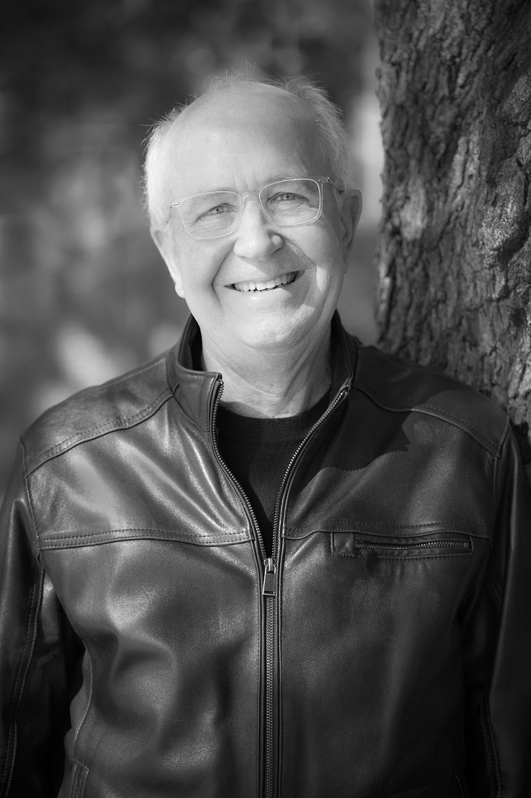

Talks, classes and keynotes
Recent audiences include SMU's Industrial Advisory Council, the University of Birmingham, the Center for Brain Health and dozens of Dallas congregations.
Author · Speaker · SMU Perkins professor
Dr. Robert A. Hunt helps churches, universities, and civic and business leaders think clearly about staying human as AI reshapes work, faith and relationships. He directs Global Theological Education at SMU's Perkins School of Theology and is the author of All Brain and No Soul? Real Humanity in an AI Age (Wipf and Stock, 2025).


The book · Wipf and Stock, 2025
How AI and technological change challenge what it means to be human. Drawing on history, science and philosophy, the book traces a story that runs from Copernicus and Darwin to today's chatbots, and argues that the real task of the AI age is to renew our humanity through community, imagination and spiritual connection.
Written for thoughtful general readers, church classes, book groups and university courses. No technical background needed.
Use code CONF40 for 40% off at Wipf and Stock.
With the advent of AI, there is something new in our world—a technology we created that pretends to be like us in the ways that seem most uniquely human.
Ways to engage
Recent audiences include SMU's Industrial Advisory Council, the University of Birmingham, the Center for Brain Health and dozens of Dallas congregations.
New writing every week on AI, ethics and human identity. Subscribe free to get each essay by email.
Commentary in Fox News, The Hill, The Dallas Morning News, the Austin American-Statesman and the Fort Worth Star-Telegram.
Two podcast series from Interfaith Encounters, including conversations with Gen Z students of several faiths.